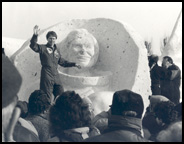
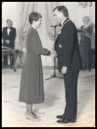

Home • Collection • Biography • Canadian Astronauts • Mission STS-42 • Microgravity Lab • Homecoming
Dr. Roberta Bondar's Homecoming
Dr. Roberta Bondar received and enthusiastic welcome upon her return from space. Since being chosen for the first Canadian astronaut program in December of 1983, Dr. Bondar had devoted almost nine years of her life to training for a mission in space. In September of 1992, Dr. Bondar decided to leave the space agency to pursue other career goals. This included continuing her scientific research and appearing for many speaking engagements. Dr. Bondar also wrote two books, Touching the Earth, which is about her experiences in space, and On the Shuttle, Eight Days in Space, a children's book that she co-authored with her sister Barbara. She was also able to pursue her life long interest in photography.
 |
 |
||
Space Shuttle Discovery landing at Edwards Air Force Base in Claifornia. January 30, 1992. Courtesy of NASA |
Roberta Bondar with snow sculpture, |
Roberta Bondar with Governor General Ramon Hnatyshyn c. 1991 Courtesy of the Governor General's Office |
Cover from Passionate Vision |
While aboard the shuttle, one of Dr. Bondar's duties was to photograph the Earth for NASA's Earth Observation Team. In 1997 Dr. Bondar combined her interest in science and photography and contributed seven photographs to the National Gallery of Canada's exhibition "Science and Photography: Beauty of Another Order". Dr. Bondar also enrolled in an undergraduate course in professional nature photography at the Brook's Institute of Photography in California. Her portfolio of photographs of Death Valley National Park earned her an honours level. Following this, Dr. Bondar embarked on a project to record all of Canada's national parks that existed as of July 1st, 2000. A cross-Canada tour called "A Passionate Vision: Discovering Canada's National Parks", sponsored by the Canadian Museum of Nature, exhibited over 100 of these large format and panoramic photograps. The photographs were also reproduced as a book by the same name, by the Right Honorable Pierre Elliot Trudeau.
Since that exhibit, Dr. Bondar has continued to pursue her interest in photography, and has participated in other photographic exhibitions and produced another book, Canada: Landscape of Dreams.